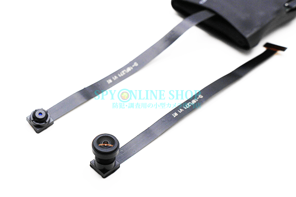

ユニット型カメラのレンズケーブル交換方法のご紹介②

季節はもう冬本番！
あったかい食べ物が恋しくなってくる季節になりましたね！
寒い冬でも当店は年中無休！
様々な機能を搭載した小型カメラをご用意して皆様のお越しをお待ちしております。
数多くの商品から撮影環境に最適なカメラを見つけてみて下さいね！！
今回は、大人気商品ユニット型カメラの
レンズケーブルの交換方法が新しくなりましたのでご紹介いたします。
ユニット型カメラはお好みや用途に併せて別売りの「広角レンズ」への付け替えができるよう
レンズケーブルの着脱が可能でした！
しかし、誰でも簡単に付け替えができるようにしてあるため
「カメラケーブルがすぐに取れてしまう」「届いたその日にカメラケーブルが取れていた」などなど・・・
ご購入いただいたお客様にご迷惑をおかけすることもしばしば・・・(´･ω･｀)
そんな問題点を改善するために、ユニット型カメラのカメラケーブル固定部分を一新！
より使いやすく、より強度を高めた仕様になりました！
それでは早速、交換方法をご紹介いたします！
こちらの動画をご覧ください。↓↓↓
ご覧いただいたように、カメラケーブルの着脱がより簡単になりました！
固定カバーが新たに加わったことで、すぐにカメラケーブルが取れてしまうというようなことは起こらず、しっかりと固定することができます。
※カメラケーブルを無理に引っ張ったりしますと、映像や動作に異常が出ますのでお取り扱いには十分お気を付けくださいませ。
勿論、動画を見たけど自分では取り付けが出来ない・・・という方は、
商品をご返送いただきまして、弊社にて取付を行う事も可能です！
どうぞお気軽にご相談くださいませ！
今回の動画でご紹介しました商品の詳細はこちらからご覧いただけます！
ユニット型カメラのおすすめはこちら！↓ ↓
SPU-c2BA
SPU-c2BM
SPU-c5BA
SPU-c5BM

ユニット型カメラ用「広角レンズ」はこちら↓ ↓
広角レンズ旧バージョンのカメラケーブル取り付け方法を確認したい方は
以下をご参照くださいませ！
⇒ユニットのレンズ交換方法
当店ではHPからのご注文、お電話でのご注文を受け付けております。
また、お気づきの点や疑問点等のお問い合わせにも対応しております！
HPからは24時間、お電話の場合は10：00～12：00、13：00～17：00の時間帯で受付中！
365日休むこと無く営業中です！どうぞお気軽にご連絡下さい(^^♪
当店HPはコチラ↓↓からご覧いただけます！
【ＳＰＹ－ＯＮＬＩＮＥ－ＳＨＯＰ】
ご相談・ご質問はこちらから!!（店舗サイトのお問合せページへ飛びます）
mail：shop@spy-online.jp
tel：042-719-3319 (対応時間10：00～12：00、13：00～17：00)
それでは今日はこのへんで・・次回更新をお楽しみに！
また近々お会いしましょう(＾＾)